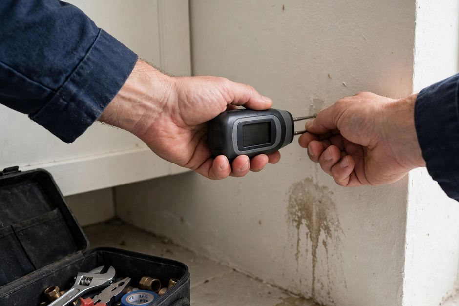

Emergency Plumbing in Belleville, IL
Emergency Plumber Belleville IL During Weekday Hours
A burst pipe, sewer backup, or leak in Belleville needs shutoff when safe. Turn off water at the main, avoid contact with sewage, and call Hinkle Plumbing Company during hours. Monday through Friday, 8:00 AM to 4:30 PM. Closed Saturday and Sunday. If you smell gas, leave and call Ameren Illinois gas emergency at 1-800-755-5000 or 911 first.
Monday through Friday, 8:00 AM to 4:30 PM. Closed Saturday and Sunday.(618) 677-65561610 W Main St, Belleville, IL 62220
What This Page Covers
Emergency Plumbing Help During Stated Hours in Belleville, IL
Emergency plumbing in Belleville covers burst pipes, sewer backups, leaks, and loss of water or hot water during stated hours. The sections below explain what to check, what to shut off, and what to describe when you call. For frozen and burst pipes, see burst and frozen pipe repair in Belleville for added detail on shutoff and thaw-related leaks.
Burst and Frozen Pipes
A pipe that splits in cold weather can release water into walls, ceilings, and floors. Shut off water at the main when safe, contain water with towels, and describe the location of water when you call during hours.
Sewer Backups
Sewage coming up through drains or toilets needs care to limit contact and spread. Avoid using water fixtures, keep people away from affected water, and describe which fixtures are affected and whether rain preceded the backup when you call.
Active Leaks
A leak at a fixture, supply line, or drain can soak cabinets and flooring. Shut off the fixture valve or main valve when safe, place a container under dripping water, and describe the source area when you call.
No Water or Low Pressure
Loss of water or a change in pressure can point to a supply issue. Check other fixtures, ask whether nearby homes have water, and check with Illinois American Water about supply interruptions before calling during hours.
No Hot Water
Loss of hot water can involve the water heater, fuel supply, or controls. Check whether cold water runs, note visible water near the heater, and describe heater symptoms when you call. Do not open gas controls.
Overflowing Toilets and Fixtures
An overflowing toilet or fixture can spread water across floors. Shut off the fixture valve when safe, avoid flushing or running water, mop water with care, and describe the fixture and water extent when you call during hours.
About Hinkle Plumbing Company
A Belleville Plumbing Company With Stated Weekday Hours
Hinkle Plumbing Company is based at 1610 W Main St, Belleville, IL 62220, and serves Belleville homes during stated hours. Monday through Friday, 8:00 AM to 4:30 PM. Closed Saturday and Sunday.
Belleville, the county seat in St. Clair County, Illinois, includes older homes where pipe materials vary by build era. In older homes, check for galvanized supply lines, cast iron drains, and clay laterals, and expect mixed materials where sections were replaced. Hinkle Plumbing Company focuses on careful diagnosis during stated hours, with shutoff and utility guidance when a problem is urgent. For sewer issues, see sewer backup help in Belleville for guidance on limiting contact and describing affected fixtures.

How we workPhotograph showing interior plumbing fixtures in a Belleville home.
What To Do First
Steps To Take Before and During a Call
The steps flex with the condition of the job, but the sequence stays the same.
Stop Water When Safe
Find the main shutoff valve and turn off water when it is safe to reach. If water is near electrical outlets or panels, leave the area and call for utility guidance before touching valves or switches.
Limit Contact With Sewage
Keep people and pets away from sewage and standing water from drains or toilets. Avoid flushing, running faucets, or using appliances that drain, and ventilate the area only when it is safe to do so.
Check Gas Smell First
If you smell gas or hear a hissing sound near gas piping, leave the building, avoid switches and phones inside, and call Ameren Illinois gas emergency at 1-800-755-5000 or 911 first from a safe place.
Describe What You See
When you call during stated hours, describe the location of water, which fixtures are affected, what changed, and what shutoff steps were taken. Clear details help the plumber prepare for the visit and bring suitable materials.
City Information for Plumbing Work
The City of Belleville requires a permit before plumbing work begins (§152.05(A)); direct replacement of a toilet, sink, faucet, or other appliance is exempt, except hot water heaters require an electrical or gas permit (§152.05(B)(3)).
How Problems Are Assessed
Assessment and Repair Methods in Belleville, IL
Assessment starts with shutoff status, visible water, and fixture symptoms, followed by checks of supply lines, drains, and the water heater. Repair choices depend on material, location, and access. For ongoing drips and hidden water, see leak repair in Belleville for assessment detail.
Shutoff and Visible Piping Check
The visit starts with a check of shutoff valves, visible piping, fixtures, and water spread. The plumber notes the source area, material, and access limits before deciding on repair steps during stated hours.
Leak Source Checks
For leaks, checks cover fixture seals, supply connections, drain joints, and nearby water stains. In older homes, check for galvanized supply lines and cast iron drains, and expect mixed materials where earlier sections were replaced.
Drain and Sewer Checks
For backups, checks cover affected fixtures, floor drains, and whether water rises in multiple fixtures. A backwater valve may be discussed as an option to limit future backup, with limits explained before any work is chosen.
Sewer Lateral Assessment
For sewer line problems, review covers the lateral and fault location. The City of Belleville Sewer Lateral Repair Program addresses lateral repair; check current City program details for how the program applies.
Water Heater Checks
For hot water loss, checks cover water flow, heater controls, visible leaks, and venting condition. The plumber describes repair or replacement choices based on heater condition, age indicators, and access, with scope discussed before work begins.
Pipe Repair and Replacement Choices
Repair choices depend on pipe material, damage location, and access. In older homes, check for clay laterals and cast iron drains, and expect repair sections to use copper, PEX, or PVC where suitable for the location and system.
Checks before handoff
The work is checked before the visit ends, and what was done is reviewed with you.
Common Emergency Patterns
Common Emergency Patterns in Belleville Homes
The patterns below describe common situations, not specific jobs. Each pattern shows shutoff steps, utility checks, and details to describe when calling during stated hours, so the visit can focus on diagnosis and repair choices.

Burst Pipe in Cold Weather
A common call involves water spreading from a split pipe in cold weather, with water visible at ceilings, walls, or floors. The caller is asked to shut off water at the main when safe, avoid contact with water near electrical fixtures, and describe where water is visible and which fixtures are affected. In older homes, check for galvanized supply lines and expect mixed materials where sections were replaced. The visit focuses on locating the split, checking piping, and discussing repair choices based on material, location, and access during hours.
Sewer Backup After Rain
A common call involves sewage rising in drains or toilets after rain, with water affecting floor drains and lower fixtures. The caller is asked to avoid using water fixtures, keep people away from affected water, and describe which fixtures are affected and whether rain preceded the backup. Checks cover fixture symptoms, drain condition, and lateral condition, with clay laterals checked in older homes where root intrusion is expected. The visit focuses on diagnosis and repair choices based on location, material, and access during stated hours.
Problems That Need Attention
Emergency Problems in Belleville, IL
Most calls fall into a few patterns. Knowing which pattern applies decides what the visit involves.
Burst Pipes and Frozen Pipes
Pipes can split in cold weather and release water at thaw, when leaks become visible. Shut off water at the main when safe, contain water, and describe the location and spread when calling during stated hours for assessment and repair choices.
Sewer Backups and Drain Failure
Sewage rising through drains or toilets signals a sewer or drain problem that needs careful handling. Avoid using fixtures, limit contact with affected water, and describe affected fixtures and recent rain when calling during stated hours.
Hidden Leaks and Water Spread
Water stains, damp materials, or musty odors can point to a hidden leak in piping or fixtures. Check visible piping and fixture areas, note where water or stains appear, and describe symptoms when calling during stated hours for leak assessment.
Gas Smell and Safety First
A gas smell near piping or appliances is a utility emergency, not a plumbing visit. Leave the building, avoid switches and phones inside, and call Ameren Illinois gas emergency at 1-800-755-5000 or 911 first from a safe place.
Cost and Scope
What Shapes the Scope of Emergency Work
Scope depends on location, material, access, and extent of water.
Location and Access
Work in walls, ceilings, crawl spaces, or below floors varies with access and the steps needed to reach piping. Limited access, finished surfaces, and tight spaces shape the scope, along with the location of shutoff valves and the source of water.
Material and Extent
Scope varies with pipe material, the extent of damage, and whether repair covers a section or a longer run. In older homes, check for galvanized, cast iron, and clay materials, and expect mixed materials where sections were replaced.
Diagnosis and Discussion
Every emergency starts with diagnosis of the source, extent, and repair choices. Call Hinkle Plumbing Company at (618) 677-6556 during stated hours to discuss scope factors, access, and next steps before work is chosen.
Reviews from Google
What Customers Say on Google
★★★★★
“Very prompt and responsive, the worker was friendly and informative! Will use this company again!”
★★★★★
“Don did an outstanding job for me when I needed him and highly recommend his business”
★★★★★
“Rated 5.0 out of 5 across 3 Google reviews, all five stars.”
Questions About Emergency Plumbing
Emergency Plumbing Questions for Belleville, IL

What hours does Hinkle Plumbing Company handle emergency calls?
Hinkle Plumbing Company handles calls during stated hours. Monday through Friday, 8:00 AM to 4:30 PM. Closed Saturday and Sunday. Outside stated hours, shut off water when safe, avoid contact with sewage, and contact the water or gas utility for utility emergencies. Call during stated hours to describe the problem and discuss next steps.
What should I do if I smell gas in Belleville?
If you smell gas, leave the building and avoid switches, phones, and appliances inside. From a safe place, call Ameren Illinois gas emergency at 1-800-755-5000 or 911 first. Do not re-enter the building until utility responders advise that entry is safe, and do not locate or repair gas piping.
What should I do during a sewer backup?
Avoid using water fixtures and keep people away from sewage and affected water. Avoid flushing or running water, and describe which fixtures are affected and whether rain preceded the backup when calling during stated hours. Checks cover fixture symptoms, drain condition, and lateral condition to guide diagnosis and repair choices.
What affects the scope and cost of emergency plumbing work?
Scope depends on the location of the fault, pipe material, access, extent of water, and repair choices. Finished surfaces, tight spaces, and longer pipe runs shape the work involved. Call Hinkle Plumbing Company at (618) 677-6556 during stated hours to discuss scope factors and next steps before work is chosen.
Related services
Related Services

Burst and Frozen Pipe Repair in Belleville, IL
Guidance on shutoff, thaw-related leaks, and repair choices for pipes affected by cold weather in Belleville homes.
Sewer Backup Help in Belleville, IL
Steps to limit contact with sewage, describe affected fixtures, and assess drain and lateral condition during stated hours.
Leak Repair in Belleville, IL
Assessment of fixture, supply, and drain leaks, with checks for visible water, stains, and pipe material in older homes.Mon–Fri 8:00 AM–4:30 PM
Call During Stated Hours for Emergency Plumbing Help
Call Hinkle Plumbing Company at (618) 677-6556 during stated hours to describe a burst pipe, sewer backup, or leak in Belleville. Monday through Friday, 8:00 AM to 4:30 PM. Closed Saturday and Sunday. For gas smell, call Ameren Illinois gas emergency at 1-800-755-5000 or 911 first.
Talk with the local team
Request Emergency Plumbing Services
Call (618) 677-6556 during office hours, Monday through Friday, 8:00 AM to 4:30 PM. Tell us what is happening and we will talk through the next step.